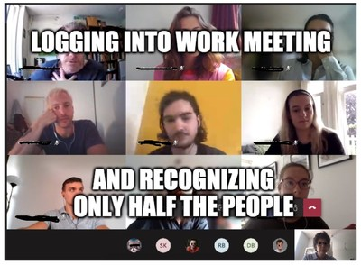

Mirko Tobias Schäfer / Assistant Professor
University of Utrecht Department for Media and Culture Studies
Featured Blog Entries
Date December 2021 / Category Publications
Gerards, Janneke, Iris Muis, Arthur Vankan, Mirko Tobias Schäfer. 2021. Impact Assessment Mensenrechten & Algoritmen. Rijksoverheid. -> access here (in Dutch)

As we are gradually coming out of this lock-down, it is time to look back on how the COVID-19 crisis has affected our work at Utrecht Data School (UDS) so far, and what we learned from it. It has been a challenging, but also a fascinating experience. And we noticed that the crisis also provides many opportunities. The following post is a summary of what we have learned on the way.
More Blog Entries
Date April 2019 / Category News
Date November 2018 / Category News
Recommended
Date September 2020
There is so much in this excellent story by the Tampa Bay Times about sheriff Chris Nocco who developed an approach of "intelligence led policing" [sic!]. Not only, does it expose how a technocratic police force built an inherently flawed algorithm, it also demonstrates how this mediocre technology meets a mediocre & ethically weak police force resulting in stifling of civil rights and systematic harassment. It also shows that the programme did not yield the promised results as crime decreased in the surrounding counties as well. Most importantly, this story shows how much needed local journalism is for exposing abuse of power.
Date September 2020
In this programmatic article, cognitive scientist Abeba Birhane from University College Dublin, writes about how Western corporate software solutions harm people in Africa. The mere techno-solutionism paired with ignorance of the local context and neglect of public values constitutes yet another colonisation of Africa, and is likely to hurt the most vulnerable demographies.
Date August 2020
At last this awesome article by Jesse Frederik from the Correspondent is also available in English. Frederik debunks convincingly many myths surrounding blockchain and exposes how blockchain currently is more techno-solutionist rhetoric than actual applicable technology.
Date June 2020
While the MIT terminates their deal with Elsevier, the Dutch universities just signed it. Sicco de Knecht from ScienceGuide.nl explains why it is mostly profitable for Elsevier, and costly for Dutch tax payers and universities. In addition the Elsevier deal does little to advance the open access agenda of the Netherlands, but opens plenty opportunities for Elsevier's to expand their business opportunities in data-related services.
Date June 2020
This article by Dimitri Tokmetzis and Morgan Meaker from The Correspondent provides an informative overview of the the use of Corona apps. Their research indicates that non of the active apps is effective in accomplishing what they promise to do, tracing the spread of COVID-19 and informing the users about their risk of being infected. However, many of these apps -in addition to being useless for their initial purpose- are prone to undermine values and fundamental rights.
Date May 2020
David Fletcher from Reuters Institute revisits the completely unfounded claim of filter bubbles. In debunking this relentless myth, he touches upon relevant issues of today's news consumption, such as social media and news, and personalization and algorithms.
Date January 2020
The NYT Privacy Project obtained a file consisting of geolocations tracked by app services on millions of phones. Their excellent analysis demonstrates how privacy invasive mobile phone tracking is, yet many apps require access to their users location. Aside from the impressive analysis, this article is an outstanding example of how to communicate effectively the social impact of mobile phone tracking.
Date November 2019
One of the annoying and utterly inaccurate frames of smart cities is their alleged efficiency and client-friendlyness. Edited by Mark Graham, Rob Kitchin, Shannon Mattern and Joe Shaw, this book book takes a playful but critical look at cities if they were run by companies.
About
Mirko Tobias Schaefer is a researcher in the field of digital culture.
This website provides information on his research interests and teaching activities.
Books
Feeds
Contact
Mirko Tobias Schaefer
Department for Media and Culture Studies
Utrecht University
Kromme Nieuwegr. 20
NL-3512 HH Utrecht